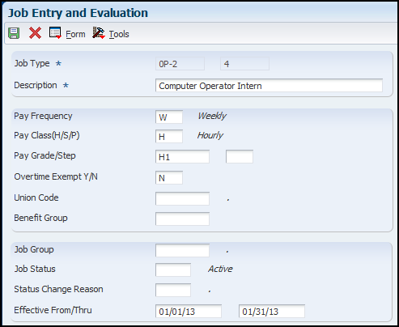

Job information (Job Entry and Evaluation - P08001) is used to identify and define the jobs within your organization.
Scope
This document is intended for EnterpriseOne users who are setting up the Human Resources and Payroll modules for use by their organization.
Details
Job Information Overview
You enter job information to identify and define the jobs within your organization. This must be done before the job can be assigned to an employee. When you enter a new job, you can review an existing job first, and then copy information from it, if applicable. When you define a job within your organization, you can track additional information that is unique to your organization or your industry by using the supplemental data funtionality. Periodically, you might need to update job information. When you change information for a job, you can globally apply the changes for all of the employees who are assigned to that job.
When you assign a job to an employee, you can have the system automatically assign all the associated job information to the employee. You can override this default job information for individual employees, if necessary. After entering initial job information, you can evaluate a job to determine a salary for the position. Job evaluation is a method of comparing jobs and establishing equitable salaries for all positions relative to their importance and value to your company. You might evaluate jobs when you add new positions to your company or when you determine a salary increase for all positions in a certain job group to stay competitive with comparative salaries in the industry. For more information on evaluating jobs see document Job Evaluation & Pay Range Formulas.
Job information is stored in the Job Information table (F08001).
Setting Processing Options for Work with Job Entry and Evaluation (P08001)
Auto Call Tab
Enter a '1' to automatically call the Category Code window when adding a job. Default of blank will not call the Window. Values are:
Blank: Do not display
1: Display
Enter the country whose legislative/regulatory window is to be called when adding a job. A blank will call the form which applies to the country of the default company 00000. Specify the code from UDC 00/CN for a country-specific legislative/regulatory window that the system displays when you add a job record. Values are:
Blank: Displays the form that is linked to the default company 00000.
Enter an appropriate code.
Enter a '1' to automatically call the Job Evaluation window when adding a job. Default of blank will not call the Window. Values are:
Blank: Do not display
1: Display
Entering Job Information
Prerequisite: UDC 06/GS (if using Job Step)
Entering this information at the job level simplifies the process of entering employee information because it eliminates the need to enter that information for each employee in that job.
From the Job Entry and Evaluation form (P08001), click Add.

To enter a basic job the following fields are required:
Job Type - Enter a code that will be added to from the (06/G) that defines the jobs within your organization.
Note: Adding a job in Job Entry and Evaluation (P08001) will add the job type value to the UDC 06/G. However adding the value directly to the UDC 06/G does not add it to the Job Information table F08001. Jobs to be used should be entered via the Job Entry and Evaluation process.
Step - Enter a code from the (06/GS) that indicates a specific level within a particular job type. The system uses this code in conjunction with the job type to determine pay rates by job in the Pay Rates table.
Description - Enter a description of the job.
Pay Frequency (H/S/P) - Enter a code from UDC 07/PF that indicates how often an employee is paid. The system uses the value in the Description-2 field on UDC to calculate the amount per pay period for a salaried employee. Values are:
B: Biweekly
W: Weekly
S: Semimonthly
M: Monthly
A: Annually
C: European Annualized
Note: You can leave this field blank and enter a pay frequency at the employee level. A blank value in this field at the job level does not override any value that you enter at the employee level.
Pay Class- Enter a code that specifies how an employee is paid. Codes are:
H: Hourly
S: Salaried
P: Piecework
Pay Grade - Enter a code that designates a category for grouping employees according to pay ranges. To set up pay grades, use Pay Grades by Class (P082001). For additional information on this topic, see Job Evaluation and Pay Range Formulas.
Step - A code that identifies a pay grade and pay step. You can use this code to determine an employee's pay rate.
Note: If you have set up your system to use rates in the Pay Grade Step table as the default pay rates for employees, changing an employee's pay grade step causes the system to automatically update the following fields:
Salary
Hourly Rate
Hours per day
Hours per year
Days per year
Overtime Exempt(Y/N) - Enter a code that indicates whether the employee fits the rules of the Fair Labor Standards Act (FLSA) and thus does not have to be paid for working overtime. Valid codes are:
Y: Yes, the employee fits the rules and does not have to be paid for working overtime.
N: No, the employee does not fit the rules and is to be paid for working overtime.
The following fields are optional: Union code, benefit group, job group, job status, status change and effective from/thru.